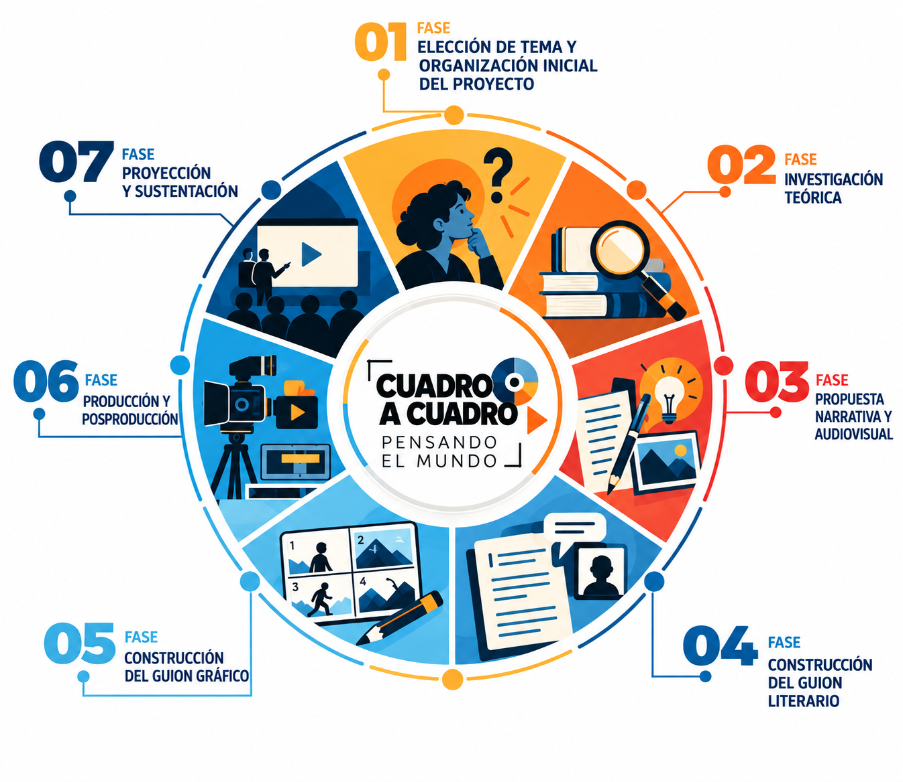
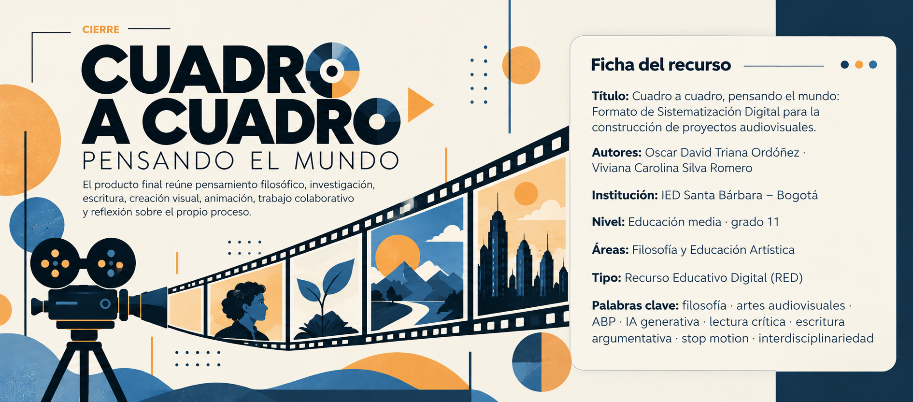

Video 1 · Introducción al Stop Motion
Primer recurso audiovisual del curso para iniciar el proceso de animación.

Una ruta de trabajo para transformar una pregunta filosófica en una obra audiovisual de stop motion: investigar, imaginar, escribir, diseñar, animar y reflexionar.
Recurso Educativo Digital interdisciplinar para grado 11 que articula Filosofía y Educación Artística mediante Aprendizaje Basado en Proyectos y uso controlado de inteligencia artificial generativa.
El proceso parte de un problema que pueda ser pensado, discutido y convertido en una decisión narrativa.
La búsqueda y lectura crítica sostienen las decisiones conceptuales y argumentativas.
Guion, storyboard, planos, escenarios, personajes, sonido y animación convierten ideas en imágenes.
La IA funciona como apoyo autorizado y trazable; el trabajo propio precede a la consulta tecnológica.
Abre cada fase para consultar propósito, actividades, evidencias, uso de IA y producto esperado.

La propuesta establece autoría, transparencia, verificación y protección de la información como principios de uso.
| Campo | Qué registrar |
|---|---|
| Herramienta | Nombre de la plataforma utilizada. |
| Propósito | Para qué se realizó la consulta. |
| Prompt | Texto exacto de la instrucción. |
| Resultado | Qué respuesta o insumo produjo. |
| Decisión del equipo | Aceptado, modificado o rechazado; justificar cuando sea relevante. |
| Evidencia | Enlace o captura de la conversación. |
Consulta los dos primeros videos directamente desde esta página y continúa con el siguiente episodio cuando estés listo.
Primer recurso audiovisual del curso para iniciar el proceso de animación.
Segundo recurso para avanzar en la preparación y realización de la animación.
Se abrirá el siguiente video de la lista de reproducción de YouTube.
Video recomendado para ampliar la mirada sobre el stop motion y su presencia en el cine.
